藤子・F・不二雄ミュージアム
| 日付 | 2017年4月30日（日） |
|---|---|
| メンバー | 家族（妻、長女・6歳、長男・3歳） |
| アクセス | 電車、バス |
最近子供たちがTVでドラえもんをよく見ているため、
川崎市にある藤子・F・不二雄ミュージアムに行ってみることにする。
2011年開館の比較的新しい施設で、完全予約制だ。
ミュージアムには登戸駅から専用のシャトルバスで向かう。
バスの中にはドラえもんのフィギュアが置かれている。
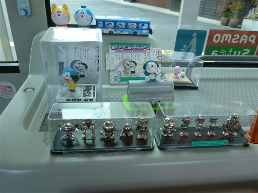
降車ボタンにもドラえもんの絵が描かれていて、なかなか芸が細かい。
もっともシャトルバスなので降車ボタンは必要ないのだが…
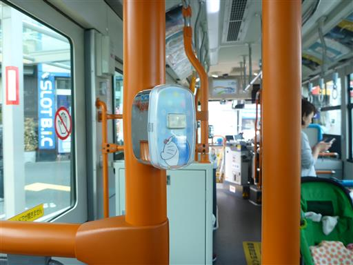
他にも、ドラえもんのぬいぐるみや、座席のシートもドラえもん関連。
果ては、途中で通過する橋にまでドラえもんが描かれている。
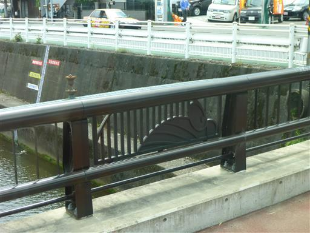
10分ほどで藤子・F・不二雄ミュージアムに到着する。
チケットの指定時刻まで1時間程度あり、館内のレストランで昼食をとってから
入館しようと考えていたが、レストランも指定時刻にならないと入れないようだ。
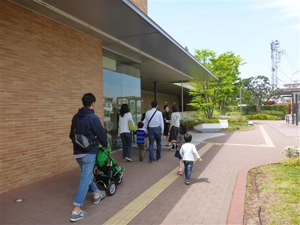
仕方がないので、近くにあるくら寿司に行くことにする。
子供たちにとっては初めての回転寿司で、色々な仕掛けに喜んでいた。
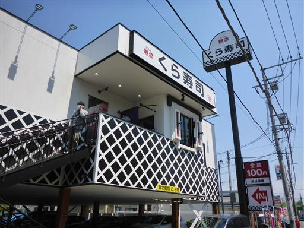
指定時刻になったので入館する。内部は撮影禁止。
藤子・F・不二雄にまつわる様々なものが展示されている。
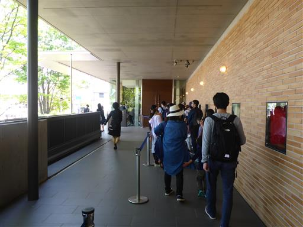
庭があったので外に出てみる。
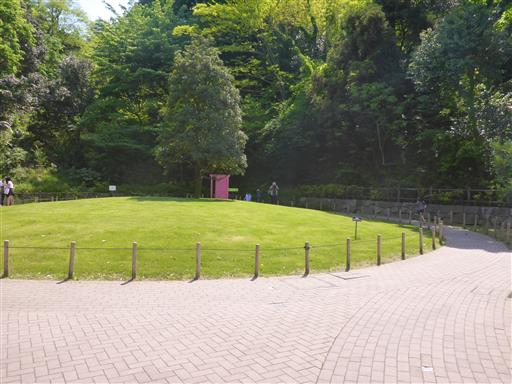
どこでもドア。ドアが置いてあるだけで特に工夫はない。
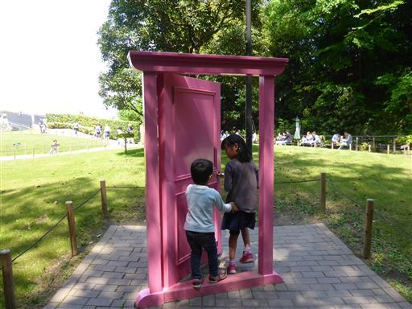
ドラえもんの空き地にある土管。自分が子供のころは土管でよく遊んだが、
最近は土管のある空き地なんて、どこにも無さそうだ。
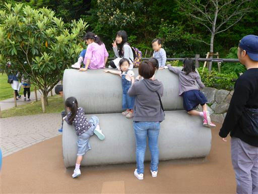
どら焼きアイスを買って食べる。
それなりに高いのだが、見た目が可愛いし味もおいしい。
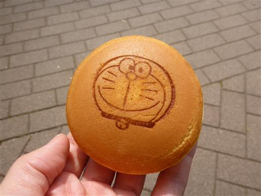
ドラミちゃん…
こちらはちょっと目立たない場所に置かれている。
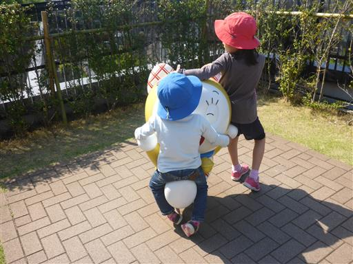
室内に戻る。何やら電子ボードが置かれているが使い方がよく分からない。
藤子・F・不二雄ミュージアムは、あくまで貴重な品々が展示されているミュージアムであり
子供が楽しめるか、という観点では少々物足りなかった。
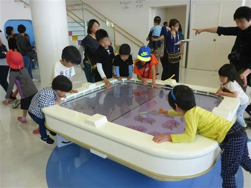